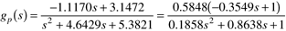

| 1: | The transfer function for the van de Vusse reactor is given below; the input variable is dilution rate (F/V, min-1) and the output is concentration of component B (mol/liter). Find the gain and phase margins for the Ziegler-Nichols recommended P, PI, and PID parameters. Show the resulting closed-loop time-domain responses to a unit setpoint change.

|
| 2: | The IMC-based PID design procedure for the van de Vusse reactor (Additional Exercise 1) results in a PID with first-order lag controller. Find how the gain and phase margins vary as a function of the IMC filter factor, l. Vary l from 0.1 minutes to 1 minute. What is the recommended value of l if the minimum gain and phase margins are 3 and 75°, respectively? |